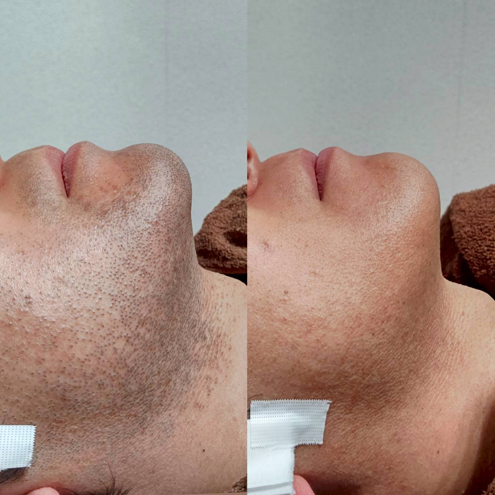

施術後、運動やお風呂はいつから大丈夫?

施術を終えた日は、「今日はジムに行っても平気ですか」「湯船に浸かってもいいですか」というご質問をよくいただきます。当日の過ごし方を少し工夫するだけで、肌の落ち着き方が変わってきます。
施術直後の肌は毛穴が開き、熱を持ちやすい状態になっています。この状態で汗をかく運動や長時間の入浴をすると、肌への刺激が増えてしまうことがあります。当日の激しい運動やサウナ、長風呂は避け、シャワー程度で済ませていただくことをおすすめしています。
翌日以降は、赤みや違和感が落ち着いていれば、普段通りの生活に戻っていただいて問題ありません。運動を再開するタイミングに迷う場合は、施術を担当したスタッフにその場で確認していただくと安心です。
効果には個人差があり、肌の反応が落ち着くまでの時間も人によって異なります。当日〜数日は保湿を心がけ、気になる症状が続く場合は無理をせずご相談ください。